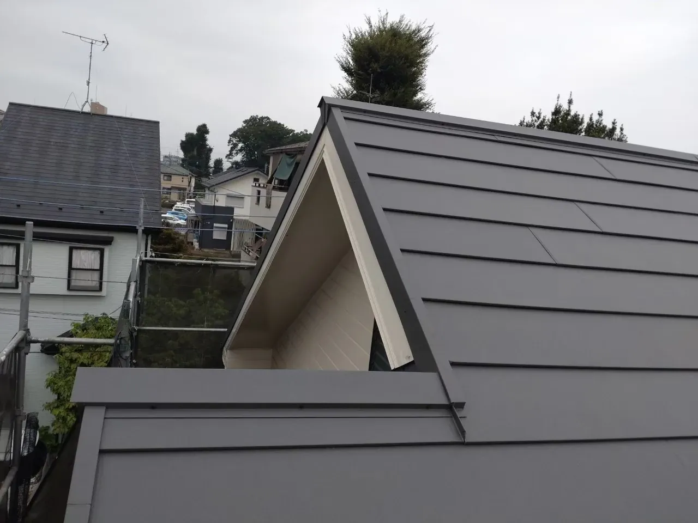
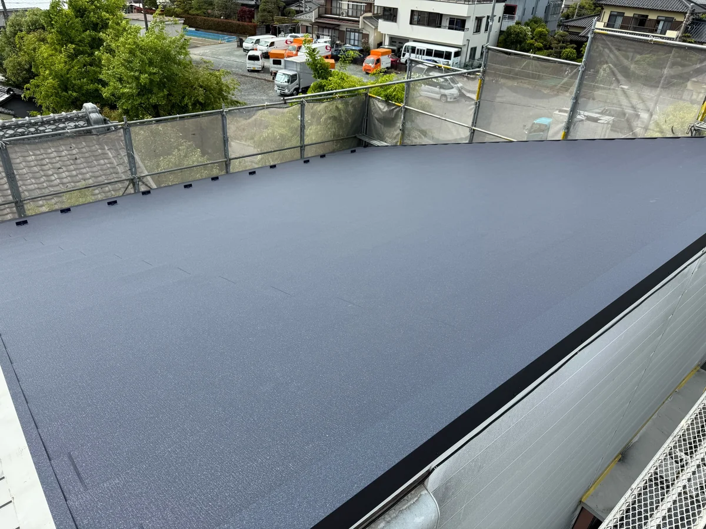
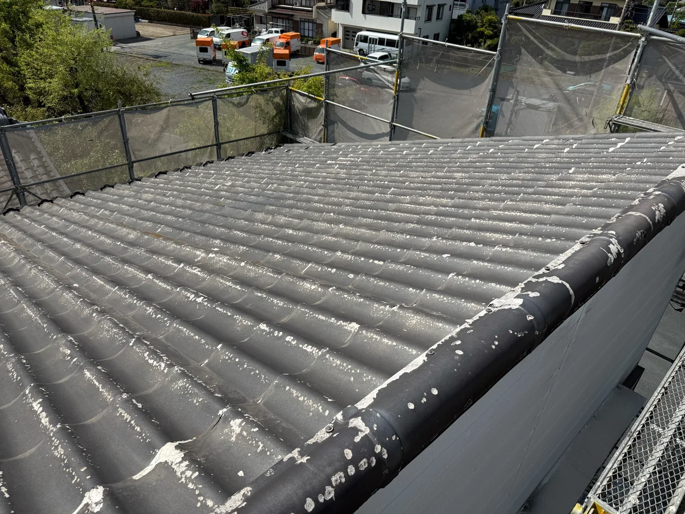
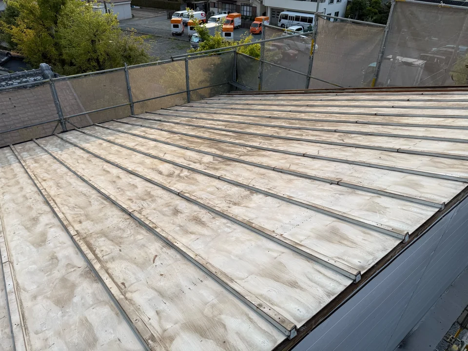
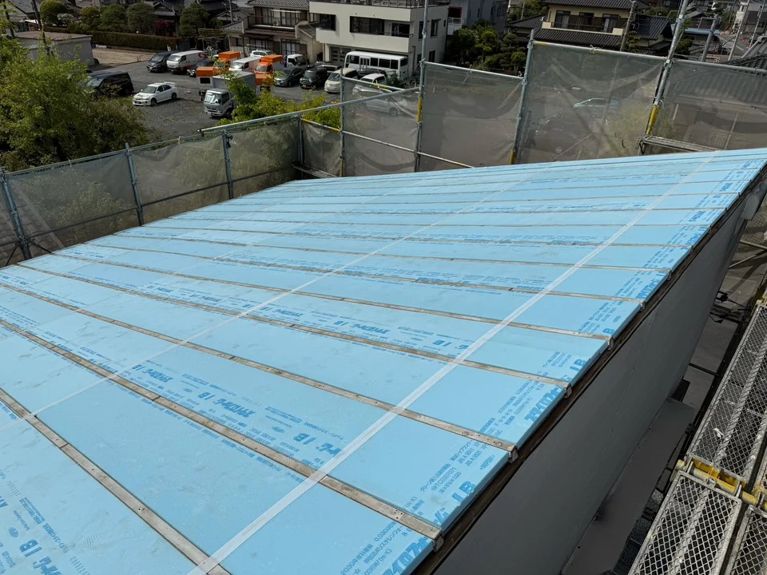
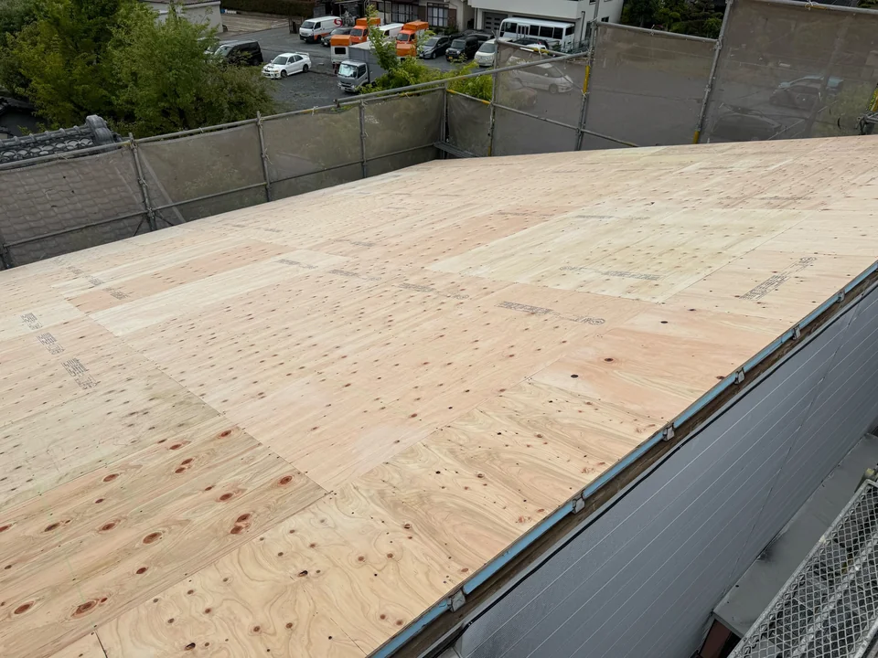
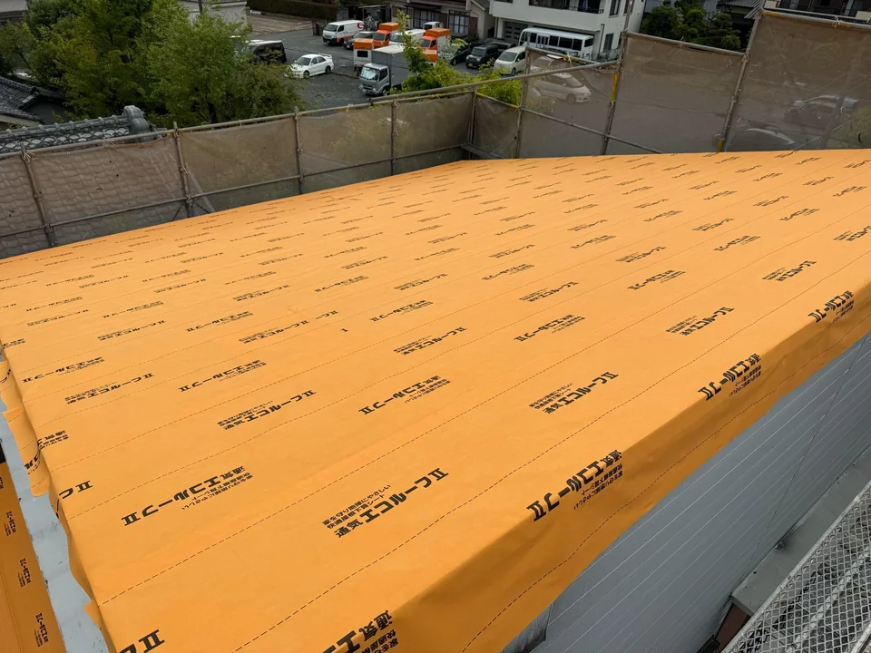

Google ／ M様★★★★★
調査から工事まで、細やかな対応。
「見積もりの段階から親切丁寧で、他のところとは違い撮った写真データを頂けたり、作業に関する報告も細かく連絡を頂けました。（中略）最初から最後まで満足した結果で大沼商会さんに頼んで良かったと思えました。」Googleマップで口コミを見る

一級建築板金技能士による自社施工
さいたま市を拠点に、埼玉県内を中心に対応。
屋根の部分補修からカバー工法・葺き替えまで、
状態を確認して、必要な工事をご説明します。
ご相談・現地調査・お見積もりは無料です。
電話で相談 048-708-0484屋根のお悩みから探す
工事の内容が決まっていなくても、ご相談いただけます。
主な工事内容
屋根の形も、傷み方も、一軒ごとに違うから。
現地を確認し、お住まいに合う工事をご提案します。
気になる工事を選ぶと、施工事例をご覧いただけます。

01
屋根の傷み・色あせが気になる方へ
今の屋根の上に、新しい屋根材を重ねる工事です。屋根と下地の状態を確認して、施工できるか判断します。
この工事の事例を見る
02
雨漏りや、屋根・下地の傷みが気になる方へ
古い屋根材を撤去して、新しい屋根へ。普段は見えない下地も確認し、必要な補修を行います。
この工事の事例を見る
03
外壁のひび割れ・傷みが気になる方へ
サイディングや外壁の板金工事。壁の状態に合わせて、張り替えや補修などの方法をご案内します。
この工事の事例を見る
04
屋根の側面・軒先の傷みが気になる方へ
破風（はふ）・鼻隠し（はなかくし）は、屋根の端にある板の部分です。建物の形に合わせた板金加工で、端部や継ぎ目まで仕上げます。
この工事の事例を見る
05
屋根の部分補修・雨樋・窓まわりなどのご相談
棟板金の補修、雨樋、窓まわりやバルコニーの笠木など。原因と状態を調べ、必要な工事をご説明します。
この工事の事例を見る工事内容・費用
施工事例
施工前から完成まで。
写真で見る、屋根の施工工程。


屋根材を葺く前に、下地の状態を確認。下地の施工から防水シート、屋根材の仕上げまで、写真で工程をご紹介します。
左右に動かすと施工前後を比較できます。
施工事例集を見る



工事の内容が決まっていなくても、ご相談ください。
大沼商会について
さいたま市南区の屋根・板金工事の専門店です。
資格に裏付けられた技術を提供します
屋根工事の経験を積み重ねています。
自社の職人が施工します。
お客様の声
「見積もりの段階から親切丁寧で、他のところとは違い撮った写真データを頂けたり、作業に関する報告も細かく連絡を頂けました。（中略）最初から最後まで満足した結果で大沼商会さんに頼んで良かったと思えました。」Googleマップで口コミを見る
「屋根の葺き替え工事着手にあたり、数社と事前相談を実施。各社の担当者から工事内容を聴取。本件工事の有効性の説明、事前調査実施状況及び見積書内容等を家族と協議の上、御社に決定しました。」Googleマップで口コミを見る
「無料見積りを依頼後、現地調査をしていただき、1週間で写真付きの分かり易い報告書を作成してくださいました。それにより、修繕が必要な箇所の現状を把握することが出来ました。天候待ちの時もありましたが、工事から仕上げ、片付けまで迅速かつ丁寧でした。」Googleマップで口コミを見る
ご相談・現地調査・お見積もりは無料です。
ご相談から施工まで
建物の市区町村と、気になっている症状をお聞かせください。
現地で状態を確認し、撮影した写真をお見せしてご説明します。
調査結果をもとにご提案します。気になる点はご相談ください。
内容をご確認いただいてから施工し、工事内容と仕上がりをご報告します。